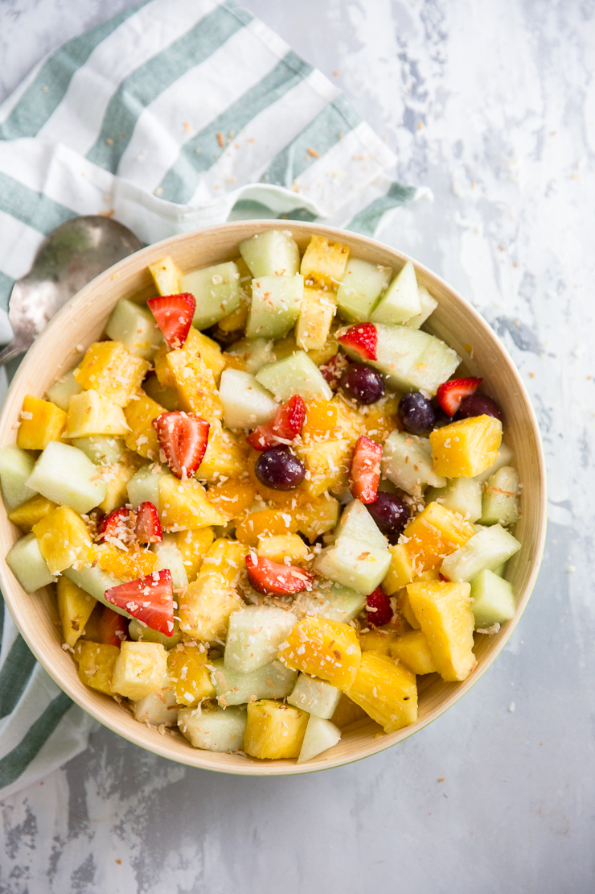

Pina Colada Fruit Salad

Description
Fruit salad is a great way to enjoy summer's finest. Fresh, ripe fruits are tossed in a simple Pina colada inspired sauce and tossed with coconut. This tropical fruit salad recipe makes a great side dish and an excellent dessert! It is the best summer fruit salad!
Ingredients
- 1 pineapple, cubed
- 1 honeydew, cubed
- 1 14 oz can mandarin oranges (drained)
- 2 cups whole grapes
- 2 cups chopped strawberries
- ¼ cup bottled pina colada mix
- 2 tablespoons orange juice
- Splash of lemon
- 1/4 cup toasted coconut
Steps
- In a large bowl, combine the pineapple, honeydew, oranges, grapes, and strawberries
- In a separate bowl, whisk together the pina colada mix, orange juice, and lemon juice.
- Pour dressing over fruit stirring to coat.
- Add toasted coconut before serving.